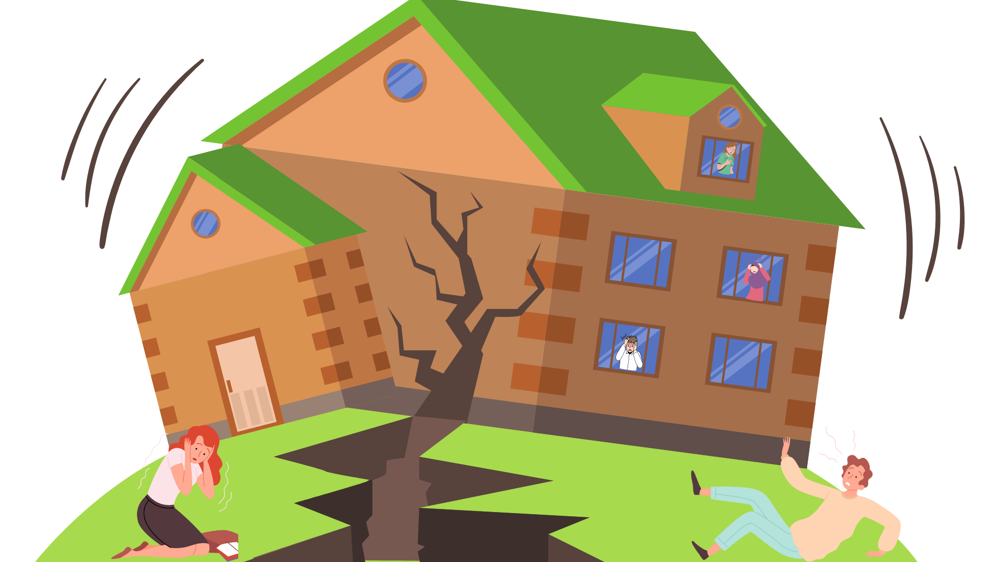

Earthquakes Can Be Measured
Earthquakes can be measured Earthquakes can be measured with a device called a seismometer, which detects the seismic waves of the earthquake as a series of zig zags, that data is then used to assign magnitude levels to the earthquake ranging from 1-10. Magnitude being the size of the waves, sometimes also referred to as the amplitude of the waves, generated by the earthquake. Intensity is substituted for magnitude at times, but they are different.
